Licenca
To delo je na voljo pod pogoji slovenske licence Creative Commons 2.5:
priznanje avtorstva - nekomercialno - deljenje pod enakimi pogoji.
Celotna licenca je na voljo na spletu na naslovu http://creativecommons.org/licenses/by-nc-sa/2.5/si/. V skladu s to licenco je dovoljeno vsakemu uporabniku delo razmnoževati, distribuirati, javno priobčevati, dajati v najem in tudi predelovati, vendar samo v nekomercialne namene in ob pogoju, da navede avtorja oziroma avtorje in izdajatelja tega dela. Če uporabnik delo predela, kar pomeni, da ga spremeni, preoblikuje, prevede ali uporabi to delo v svojem delu, lahko predelavo dela ponudi na voljo le pod pogoji, ki so enaki pogojem iz te licence oziroma pod enako licenco.

Zanka while
Doslej smo videli, da računalnik načeloma izvaja stavke našega programa po vrsti, kot so zapisani v programu, vsakega enkrat. S pogojnimi stavki smo se tudi naučili doseči, da izvajanje nek del programa preskoči (če pogoj ni izpolnjen). Kaj pa, če hočemo, da se nek del programa izvede večkrat? Tedaj lahko uporabimo zanko.
Primer
Naslednja zanka izpiše števila od 1 do 10.
| ... | Python | |||
Stavek dokler (angleško while) označuje, da gre za zanko; za njim pride pogoj za nadaljevanje – v našem primeru je to n ≤ 10, torej se zanka izvaja, dokler je pogoj n ≤ 10 izpolnjen. Pri vsaki ponovitvi zanke se izvedeta stavka izpiši n (ki izpiše trenutno vrednost n) in nastavi n na n + 1 (ki poveča n za 1).
Oglejmo si drug primer problema, ki ga je veliko lažje rešiti z zanko kot brez nje.
Primer
Legenda pravi, da je iznajditelj šaha od kralja svoje dežele zahteval naslednje plačilo: eno zrno riža za prvo polje šahovnice; dve zrni za drugo polje; štiri zrna za naslednje polje; in tako naprej, za vsako polje dvakrat toliko zrn kot za prejšnje polje. Šahovnica ima 64 polj. Koliko zrn riža mora kralj v tej zgodbi plačati?
Če poskušamo to nalogo reševati ročno, se bomo hitro utrudili in najbrž tudi zmotili: računati moramo 2 · 1 = 2; 2 · 2 = 4; 2 · 4 = 8; 2 · 8 = 16; 2 · 16 = 32; in tako naprej še kar nekaj časa, pri čemer bi na koncu morali vse te zmnožke še sešteti. Dolgo, ponavljajoče se zaporedje enih in istih operacij je kot nalašč za reševanje z računalnikom. Poskusimo napisati program, ki reši našo nalogo:

V spremenljivki zrnNaPolju hranimo število zrn na trenutnem polju, v skupajZrn pa skupno število zrn na vseh doslej obdelanih poljih. Ko se premaknemo na naslednje polje, moramo zrnNaPolju pomnožiti z 2, da dobimo število zrn na tem naslednjem polju (ki je dvakrat tolikšno kot na prejšnjem), nato pa to število prištejemo k skupnemu številu zrn na vseh poljih doslej (torej k spremenljivki skupajZrn).